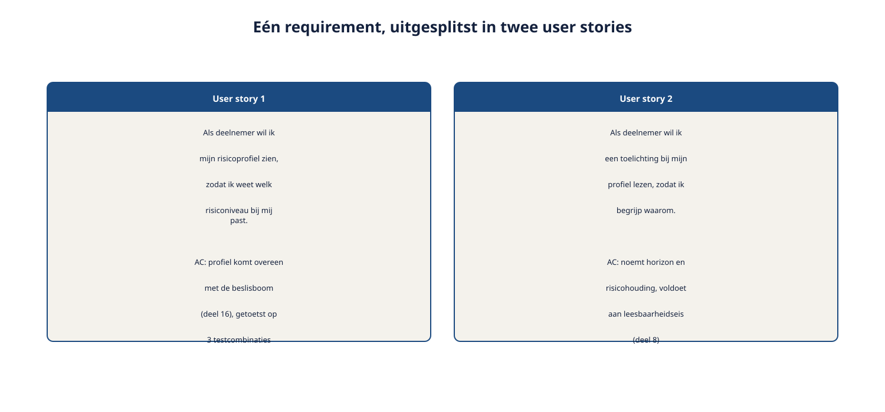
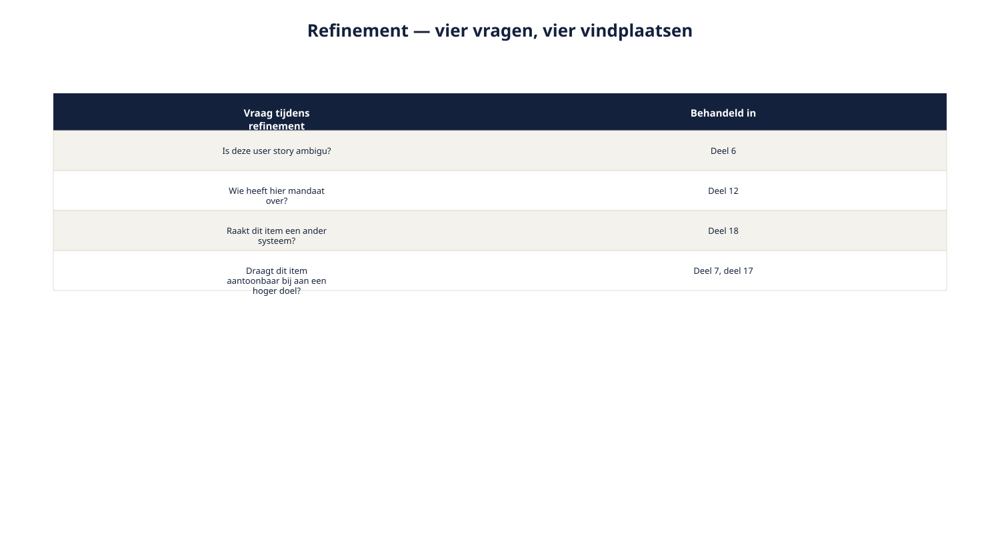
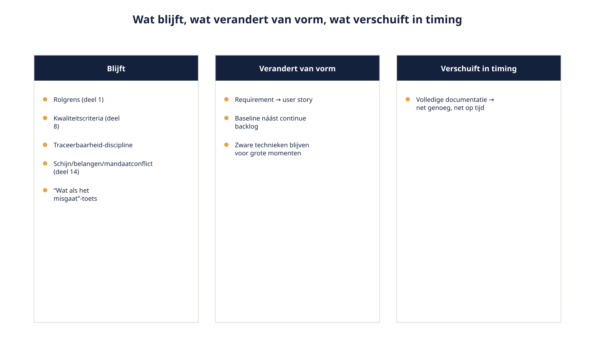
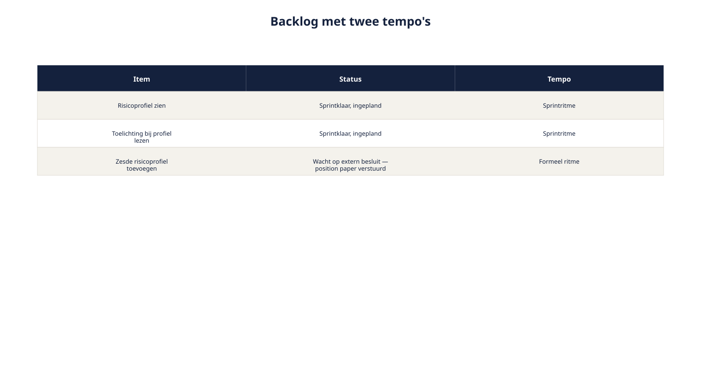

Cursus Requirements engineering · Niveau 2 (CPRE Advanced Level) · Deel 21 van 30
RE@Agile: backlog, user stories, refinement.
Vanaf deel 11 dook, aan het eind van bijna elk deel, dezelfde vraag op: wat verandert er als u iteratief werkt? Dit deel keert die verhouding om: iteratief werken wordt het hoofdonderwerp. Het Wegwijzer-ontwikkelteam werkt in sprints van twee weken; de sociale partners hebben een overlegritme van weken tot maanden. Dit deel geeft u de instrumenten om beide kloksnelheden — spanningsveld 4, het laatste van Wegwijzer — met elkaar te laten samenwerken.
9secties
±2,5uleestijd + werkboek
5controlevragen
4instrumenten voor twee kloksnelheden
Positionering. Deze cursus is een voorbereiding op de CPRE Advanced Level-certificering van IREB en is uitdrukkelijk geen vervanging van het officiële syllabus- en examenmateriaal van IREB, te raadplegen via ireb.org. Voor de volledige uitwerking van backlog, sprints en de rol van de product owner: zie de Ductus-cursus Scrum Master en Product Owner.
Niveau 2: 11 RE-strategie kiezen → 12 Stakeholderanalyse gevorderd → 13 Techniekkeuze programmaniveau → 14 Consolidatie en conflicthantering → 15 Modeling: context/doel/gedrag → 16 Modeling: data en beslisregels → 17 Attributen, prioritering en baselines → 18 Traceerbaarheid en impactanalyse → 19 Wijzigingsbeheer, meten en rapporteren → 20 AI4RE → 21 RE@Agile (hier) → 22 Examentraining + capstone
01
Waar dit deel over gaat
⏱ 8 min
Dit deel opent de RE@Agile-module en behandelt daarmee het laatste spanningsveld van niveau 2. Het bouwt voort op alles wat u eerder leerde: de beheerbasis, de bijdragetoets, de driedeling schijn-/belangen-/mandaatconflict, vroege signalering — en laat zien hoe die instrumenten meebewegen in een agile werkwijze zonder hun kern te verliezen.
Aan het eind van dit deel kunt u:
een requirement omzetten naar een user story met acceptatiecriteria, zonder de kwaliteitseisen uit niveau 1 te verliezen;
uitleggen hoe de beheerbasis zich verhoudt tot een backlog;
refinement herkennen als een lichte, herhaalde vorm van elicitatie en validatie;
onderscheiden wat er in een agile werkwijze blijft, verandert, of van vorm verschuift;
een aanpak toepassen die twee kloksnelheden — een sprintend team en een formeel besluitvormend gremium — met elkaar laat samenwerken.
02
De bijsluiter wordt het hoofdgerecht
⏱ 10 min
Vanaf deel 11 dook, aan het eind van bijna elk deel, dezelfde vraag op: wat verandert er als u iteratief werkt? Steeds een kort fragment, een bijsluiter bij het hoofdonderwerp van dat deel. Dit deel keert die verhouding om: iteratief werken wordt het hoofdonderwerp, en de losse fragmenten uit deel 11 tot en met 19 komen aan het eind samen tot één beeld.
"We werken in sprints van twee weken. Hans Reitsma en de sociale partners hebben een overleg dat soms weken op zich laat wachten voor er iets besloten is."
"Dus als een user story hun akkoord nodig heeft, staat de sprint stil?"
"Alleen als we het niet vroeg genoeg zien aankomen."
De directe aanleiding bij Wegwijzer: het ontwikkelteam werkt in sprints van twee weken. Hans Reitsma en de sociale partners hebben een eigen overlegritme dat weken tot maanden beslaat. Beide ritmes zijn legitiem — en ze moeten met elkaar samenwerken zonder dat het ene het andere ondermijnt. Dit is spanningsveld 4: twee kloksnelheden, zichtbaar geworden vanaf de coalitiekaart en de continu/periodiek-indeling uit eerdere delen, en hier voor het eerst rechtstreeks geadresseerd.
03
Van requirement naar backlogitem en user story
⏱ 16 min
Een requirement, geformuleerd volgens het Ductus-sjabloon ("Als [trigger], dan [systeem] moet/mag [handeling]"), beschrijft wat het systeem moet doen, vanuit het perspectief van het systeem. Een user story ("Als [rol], wil ik [doel], zodat [reden]") beschrijft waarom het waardevol is, vanuit het perspectief van de gebruiker, doorgaans kleiner gesneden dan een volledige requirement.
Dit zijn geen concurrerende vormen — een requirement kan in meerdere user stories worden opgesplitst, en een user story blijft, om bruikbaar te zijn, onderworpen aan dezelfde kwaliteitscriteria als een requirement: toetsbaar, ondubbelzinnig, met een duidelijke grens tussen wat wel en niet wordt bedoeld.
Voorbeeld — het risicoprofielenbesluit vertaald:
Requirement: "Als een deelnemer de vragenlijst heeft afgerond, dan moet Wegwijzer een risicoprofiel tonen dat overeenkomt met de vastgestelde rekenregels."
Uitgesplitst in user stories:
"Als deelnemer wil ik mijn risicoprofiel zien, zodat ik weet welk risiconiveau bij mij past." Acceptatiecriterium: het getoonde profiel komt overeen met de uitkomst van de beslisboom uit deel 16, geverifieerd tegen minstens drie testcombinaties.
"Als deelnemer wil ik een korte toelichting bij mijn profiel lezen, zodat ik begrijp waarom dit profiel bij mij past." Acceptatiecriterium: de toelichting noemt expliciet de horizon en risicohouding die tot dit profiel leidden, in taal die voldoet aan de leesbaarheidseis uit niveau 1.

Figuur 21-1 — één requirement uitgesplitst in twee user stories, elk met een acceptatiecriterium dat teruggrijpt op de kwaliteitscriteria uit deel 8
Het acceptatiecriterium is, inhoudelijk, hetzelfde soort instrument als de kwaliteitseis uit niveau 1 — alleen kleiner van omvang en dichter bij het werk van één sprint.
Controlevragen
Uit Werkboek deel 21, Opdracht 21.1 — Requirement naar user stories
1Splits de requirement "Als een deelnemer zijn risicoprofiel wil aanpassen, dan moet Wegwijzer de gewijzigde keuze doorgeven aan het vermogensbeheerplatform en KERN" op in minimaal twee user stories, elk met een acceptatiecriterium.Toon antwoord
Voorbeeld: "Als deelnemer wil ik mijn risicoprofiel kunnen aanpassen, zodat mijn keuze aansluit bij mijn actuele situatie." Acceptatiecriterium: de wijziging wordt binnen Wegwijzer opgeslagen en getoond aan de deelnemer binnen enkele seconden na bevestiging. "Als systeem wil ik een gewijzigd risicoprofiel doorgeven aan het vermogensbeheerplatform, zodat de belegging kan worden aangepast." Acceptatiecriterium: het bericht wordt verstuurd volgens het afgesproken formaat (deel 18) en de deelnemer ziet een statusindicatie totdat bevestiging is ontvangen. "Als systeem wil ik KERN informeren over de gewijzigde profielkeuze, zodat toekomstige uitkeringsberekeningen de juiste gegevens gebruiken." Acceptatiecriterium: het statusveld in KERN wordt bijgewerkt, met een foutafhandeling. Let op: niet elke user story hoeft een menselijke actor als rol te hebben — "als systeem" is ook geldig, zolang de waarde (zodat...) duidelijk blijft.
04
De backlog als levend beheerinstrument
⏱ 12 min
Een backlog vervangt de beheerbasis uit niveau 1 en deel 17 niet — identificatie, herkomst, status, versie, prioriteit, eigenaarschap, afhankelijkheid blijven nodig. Wat verandert, is de plek: deze attributen leven nu in het backlogitem zelf, in plaats van in een apart, periodiek bijgewerkt requirementsdocument.
Een backlog is, in RE-termen, een levende, voortdurend geprioriteerde requirementsverzameling. De vier prioriteitscategorieën en de bijdragetoets blijven het instrument om die prioritering te onderbouwen — ze verschijnen alleen niet meer als een periodiek document, maar als een continu bijgewerkte lijst.
Buiten de scope van deze cursus
Voor de volledige werking van een backlog, sprint planning en de rol van de product owner: zie de Ductus-cursus Scrum Master en Product Owner.
05
Refinement als doorlopende elicitatie en validatie
⏱ 14 min
Backlog refinement — het periodiek doornemen en verfijnen van items voordat ze aan de beurt zijn — is inhoudelijk niets anders dan een lichte, herhaalde vorm van elicitatie en validatie, uitgevoerd op kleinere schaal en hogere frequentie.
Bij een refinementsessie stelt u, impliciet of expliciet, dezelfde vragen die u in de voorgaande delen leerde stellen:
Is deze user story ambigu (deel 6)?
Wie heeft hier mandaat over — het team, of ligt dit ergens anders (deel 12)?
Raakt dit item een ander systeem (de vroege-signaleringscheck uit deel 18)?
Draagt dit item aantoonbaar bij aan een hoger doel (de bijdragetoets, deel 7 en 17)?

Figuur 21-2 — een refinementsessie met, per vraag die wordt gesteld, een verwijzing naar het deel waar die techniek is behandeld
De kern
Refinement is dus geen nieuwe activiteit naast requirements engineering — het is requirements engineering, in een lichter en frequenter ritme uitgevoerd. Wie refinement ziet als "iets anders dan RE", mist de kern van dit deel.
Controlevragen
Uit Werkboek deel 21, Opdracht 21.2 — Refinement-vragen toepassen
2Neem de user story "Als deelnemer wil ik een vergelijking tussen twee risicoprofielen zien, zodat ik een weloverwogen keuze kan maken." Doorloop de vier refinement-vragen: wat wilt u navragen voordat deze user story sprintklaar is?Toon antwoord
Ambiguïteit: wat betekent "vergelijking" precies — naast elkaar, of met een uitgelicht verschil? Navragen bij Sven en Corrie. Mandaat: is dit een UX-keuze (Svens mandaat) of raakt de precieze inhoud van de vergelijking ook Petra's zorgplicht-eis? Cross-systeem impact: waarschijnlijk geen impact, aangezien dit alleen presentatie van al bekende profielen betreft — een korte check volstaat. Bijdragetoets: draagt dit bij aan "deelnemer maakt een weloverwogen keuze" — ja, direct en aanwijsbaar.
06
Wat blijft, wat verandert, wat verschuift
⏱ 16 min
Een expliciet overzicht van hoe klassieke RE zich verhoudt tot een agile werkwijze.
Blijft, onveranderd relevant:
De rolgrens: feiten, opties en consequenties leveren; het besluit ligt bij anderen.
De kwaliteitscriteria voor een goede requirement of acceptatiecriterium.
De traceerbaarheid-discipline — wel lichter en vaker toegepast, maar niet losgelaten.
De driedeling schijn-/belangen-/mandaatconflict.
De "wat als het misgaat"-toets.
Verandert van vorm:
Requirement wordt user story, met acceptatiecriteria in plaats van een uitgebreide beschrijving.
Periodieke baseline blijft bestaan, maar naast een continu bijgewerkte backlog — de baseline markeert de formele momenten, de backlog het dagelijkse werk.
Zware elicitatietechnieken blijven bestaan voor periodieke, grote momenten; refinement neemt het lichte, continue werk over.
Verschuift in timing:
Volledige, vooraf uitgewerkte documentatie verschuift naar "net genoeg, net op tijd" — een user story wordt pas vlak voordat hij aan de beurt is volledig uitgewerkt, in plaats van alles in één keer vooraf.

Figuur 21-3 — de drie kolommen — blijft, verandert van vorm, verschuift in timing — met per rij een concreet element uit deze cursus
Wat dit niet betekent: dat kwaliteit, traceerbaarheid of de rolgrens minder belangrijk worden. Ze worden alleen op een andere manier, in een ander ritme, toegepast.
Controlevragen
Uit Werkboek deel 21, Opdracht 21.3 — Blijft, verandert, verschuift
3In welke kolom hoort "de kwaliteitscriteria voor een toetsbare eis"?Toon antwoord
Blijft. Kwaliteitscriteria zijn onafhankelijk van de vorm waarin een eis wordt vastgelegd.
Verschuift in timing. De inhoud van volledige documentatie vervalt niet noodzakelijk, maar het moment ervan verschuift naar net-op-tijd.
5In welke kolom hoort "de rolgrens tussen requirements engineer en besluitvormer"?Toon antwoord
Blijft. De rolgrens is onafhankelijk van werkwijze (agile of niet) — expliciet genoemd als onveranderd.
07
Twee kloksnelheden, één programma
⏱ 18 min
Het kernprobleem van spanningsveld 4: een user story die een collectieve kaderkeuze raakt — zoals het aantal risicoprofielen — kan niet "af" zijn binnen één sprint als het bijbehorende formele akkoord van de sociale partners nog loopt. Vier eerder geleerde instrumenten, hier samengebracht tot een aanpak.
Classificatie (deel 19) bepaalt of iets sprintklaar is. Een "groot" geclassificeerde wijziging — die de baseline raakt — wordt niet in de sprint-forecast opgenomen totdat het formele traject is afgerond. Dit is een expliciete, herkenbare status in de backlog: "wacht op extern besluit" — niet simpelweg "geblokkeerd" of "in progress", wat de indruk zou wekken dat het team er iets aan kan doen.
Vroege signalering (deel 18) start het formele traject op tijd. Bij refinement wordt een item dat een collectieve kaderkeuze raakt, vroeg gemarkeerd — zodat het formele traject bij de sociale partners parallel aan het sprintwerk aan andere items kan lopen, in plaats van pas te starten wanneer het item "aan de beurt" zou zijn.
Asynchrone consultatie (deel 13) is het instrument om de sociale partners te betrekken. Hans Reitsma hoeft niet in het sprintritme mee te draaien — een position paper of formeel verzoek, met een termijn die bij zijn eigen overlegritme past, houdt beide kloksnelheden gescheiden zonder het contact te verliezen.
De backlog toont beide kloksnelheden naast elkaar, zichtbaar voor iedereen. Items die sprintklaar zijn (klein of middel) staan naast items die wachten op een formeel traject (groot) — met de status expliciet zichtbaar, zodat niemand ten onrechte verwacht dat een groot item net zo snel wordt afgerond als een klein item.

Figuur 21-4 — een voorbeeldbacklog met twee zichtbare banen — "sprintklaar" en "wacht op extern besluit" — elk met hun eigen tempo
08
Toegepast op Wegwijzer, spanningsveld 4 afgerond
⏱ 14 min
Een fragment van de Wegwijzer-backlog, met beide kloksnelheden zichtbaar:
Item
Classificatie
Status
Tempo
"Als deelnemer wil ik mijn risicoprofiel zien"
Klein
Sprintklaar, ingepland
Sprintritme
"Als deelnemer wil ik een toelichting bij mijn profiel lezen"
Klein
Sprintklaar, ingepland
Sprintritme
"Zesde risicoprofiel toevoegen" (Marloes' voorstel, deel 19)
Groot
Wacht op extern besluit — position paper verstuurd aan sociale partners
Formeel ritme
De eerste twee items lopen door het sprintritme van het team. Het derde item staat zichtbaar in de backlog, met een duidelijke status die aangeeft waaróm het niet in een sprint wordt opgepakt — geen verborgen vertraging, maar een expliciet, begrijpelijk wachten.
Met dit deel is spanningsveld 4 — twee kloksnelheden — volledig gedekt: het onderscheid tussen requirement en user story, refinement als doorlopende RE-activiteit, en een concrete aanpak om een sprintend team en een formeel besluitvormend gremium naast elkaar te laten functioneren. De RE@Agile-module (Practitioner) is hiermee compleet, en daarmee zijn alle vier spanningsvelden van niveau 2 — veelstemmigheid, complexiteit van de rekenregels, beheer over systeemgrenzen, en twee kloksnelheden — behandeld.
09
Terugblik: de losse fragmenten samengevoegd
⏱ 12 min
Een overzicht van wat elk voorgaand deel van niveau 2 al liet zien over iteratief werken — nu in samenhang in plaats van los.
Deel
Wat het liet zien over iteratief werken
11
De mate van iteratief werken is zelf een van de vijf RE-strategiekeuzes.
12
Een stakeholderkaart wordt periodiek herijkt, bij releasemomenten — niet elke sprint.
13
Continu-lichte technieken passen in het sprintritme; periodiek-zware technieken bij vaste, grotere momenten.
14
Een lichte, snelle versie van conflicthantering voor dagelijkse verschillen; de zware escalatieroute blijft voor wat aan de criteria voldoet.
15
Het programmacontextdiagram verandert traag; het gedragsmodel groeit met elke sprint.
16
Elke toevoeging aan een beslisregelset vraagt een hernieuwde kwaliteitstoets.
17
Sprints werken bínnen een baseline; een nieuwe baseline markeert een groter afstemmingsmoment.
18
Vroege signalering van mogelijke cross-systeem impact, al bij backlog-refinement.
19
Classificatie past in het sprintritme; "grote" wijzigingen volgen het formele tempo van besluitvorming.
20
AI-ondersteuning (documenteren, valideren) past van nature in het lichte, continue ritme van refinement.
21
Dit deel zelf: het volledige samenspel tussen sprintritme en formeel ritme, samengebracht in de backlog.
Wat uit dit overzicht naar voren komt, is geen losstaande verzameling tips, maar één consistent principe: klassieke RE-disciplines blijven volledig van kracht in een agile werkwijze — ze veranderen alleen van vorm en ritme, nooit van inhoud.
Deel 22 sluit niveau 2 af met examentraining voor alle vier Advanced Practitioner-modules en een capstone-opdracht waarin u de volledige Wegwijzer-aanpak verdedigt tegen vier rollen.
Verder met deel 22
Alle vier spanningsvelden van niveau 2 zijn nu behandeld: veelstemmigheid, complexiteit van de rekenregels, beheer over systeemgrenzen, en twee kloksnelheden. Deel 22 sluit niveau 2 af met oefenvragen per Advanced Practitioner-module en een capstone-opdracht waarin u de volledige Wegwijzer-aanpak samenhangend presenteert en verdedigt.